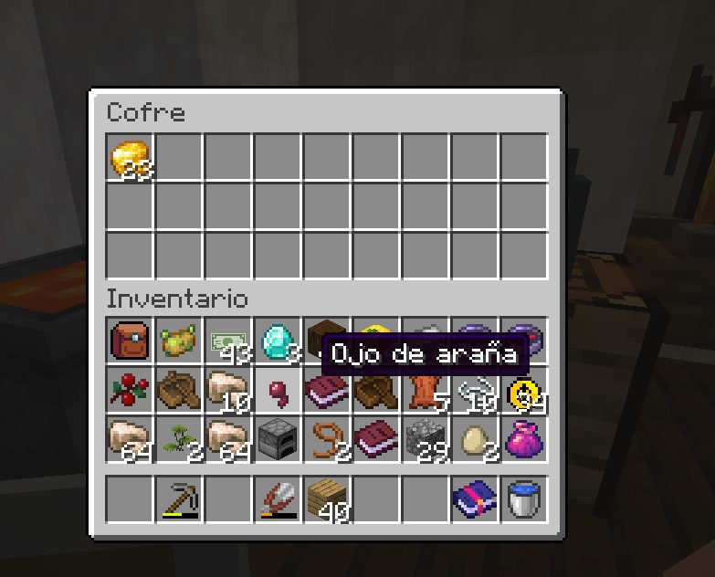
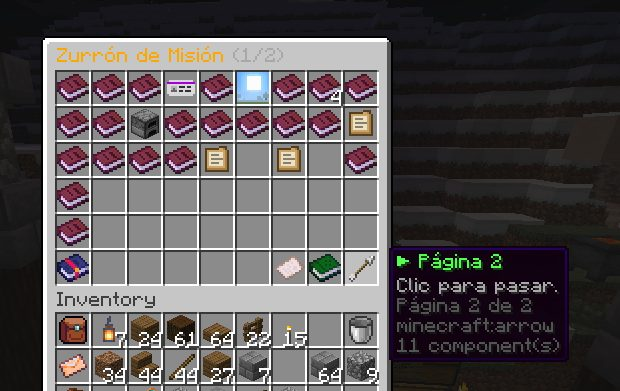
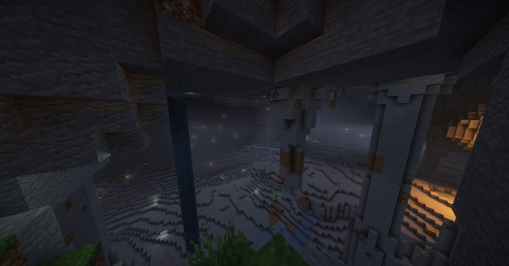
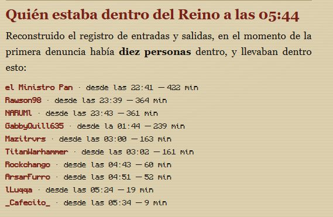

Boletín Oficial del Ayuntamiento del Reino · Se informa, no se alarma
EL HERALDO DEL REINO
Número 122 de septiembre de 2026Tarde del miércoles 2 de septiembre a la mañana del jueves 3
SE OFRECIERON DE POLICÍAS A LA UNA Y CINCUENTA Y DOS; A LAS CUATRO Y CINCUENTA Y TRES YA TENÍAN CASO
Cuatro vecinos pidieron anoche formar un cuerpo de investigación. Tres horas y un minuto después le vaciaban la casa a una de ellos: cuatro hornos, y un loro con nombre. El Reino se ha levantado con comisaría, con expediente y con la misma pregunta de hace siete días.
Redactado por la Oficina de Prensa del Ayuntamiento
PORTADA
Se llevaron los hornos, dejaron el oro y mataron al loro, que era lo único que tenía nombre

El arcón de GabbyQuill635 tal y como lo fotografió al volver. Obsérvese lo que sigue dentro: su bolsa entera, sus lingotes, sus libros. Falta exactamente aquello que estaba fuera del arcón.
Archivo Municipal · pase el ratón para revelarla
A las 04:53 de la madrugada, GabbyQuill635 presentó denuncia por la
sustracción de sus hornos. Veintisiete minutos antes había vuelto al Reino después
de veintiuna horas y quince minutos fuera, que es el hueco entero en el que pudo
pasar. Cinco minutos más tarde amplió la denuncia: también le habían matado al loro,
un animal con etiqueta y con nombre propio — Dwem.
Esta Oficina no dispone de la hora del robo. Dispone de la hora de la
denuncia. Con esa salvedad, y solo con esa, consta lo siguiente.
Primero: se llevaron lo barato y dejaron lo caro. La denunciante lo resumió en
seis palabras — «se robaron mis hornos pero me dejaron mi oro» —. En la
fotografía que aportó, el arcón conserva su contenido.
Segundo: esto ya había pasado, y hace siete días. El 27 de agosto se
denunciaron cuatro hornos y un alto horno, todos cargados, y una hora y cuatro minutos
después otros hornos con arena cociéndose dentro. En aquella ocasión los arcones con
cartel de [Privado] siguieron en su sitio. Se llevaron, entonces y ahora,
exactamente aquello a lo que el cartel no alcanza.
Tercero: y a ella ya le había pasado. El mismo 27 de agosto desaparecieron de
su corral tres pandas y tres loros, con el recinto intacto. Es la segunda vez que
esta vecina denuncia, y la segunda vez que lo que se llevan tiene plumas.
La autoridad examinó aquel primer caso, dictaminó que «son las mismas huellas»
y que «es alguien de vuestro grupo», y remitió la investigación a los vecinos.
Los vecinos la han aceptado. Esta casa publica hoy, por primera vez, el pliego de la
Comisaría del Reino.
ANOMALÍAS
Las semillas están dando otra cosa, y la explicación oficial llegó en dos minutos
A las 07:07, la misma vecina que había pasado la noche denunciando presentó una
segunda queja de naturaleza distinta: «las semillas de ajo dan zanahorias, las semillas
de tomate dan bayas». La huerta del Reino está entregando, de manera sistemática, una
planta por otra.
La versión oficial la dio el Emperador Duke a las 09:00, sin que mediara
consulta previa a esta Oficina: «es culpa de los pulsos electromagnéticos de la torre,
en breves lo solucionamos». Queda por tanto establecido que la Torre también
influye en las semillas, dato que hasta hoy no constaba en ningún registro agrícola de
esta corporación y que se incorpora al mismo por la vía de la declaración imperial.
Se recuerda al vecindario que la Torre lleva ocho años produciendo pulsos y que ésta es
la primera vez que uno de ellos siembra zanahorias.
AGRICULTURA
Medida correctora en los tiempos de cultivo: lo que tardaba medio minuto tarda cuatro horas
Esta corporación hace constar que, tras el oportuno estudio, se ha adoptado una
medida correctora sobre los tiempos de maduración de la huerta. Donde una planta
estaba lista en treinta segundos, ahora necesita cuatro horas.
El primer efecto se notó en la persona de Cliqueame, que a las 20:02
comunicó lo siguiente: «quería hacer más pruebas pero ya no puedo cosechar el cannabis,
lo planté hace casi 1 día y está crecido». Lo tiene crecido y no lo recoge, y de eso
se ocupa la nota siguiente de este mismo número.
Sobre la medida en sí, la corporación entiende que treinta segundos no era un tiempo de
cultivo sino una concesión, y que su retirada devuelve a la huerta del Reino la
dignidad de tener que esperarla.
SERVICIOS
La huerta se recoge con la mano, y el vecindario llevaba meses recogiéndola con la herramienta
Queda aclarado, y se publica aquí para que conste: la maría y el tabaco se
recogen con la mano. Quien los golpee con herramienta pierde la planta entera y se
queda con simiente de trigo, que no vale para nada.
La instrucción existía. No estaba escrita en ninguna parte donde pudiera leerla quien la
necesitaba, que es la manera más limpia que tiene una casa de dar una instrucción sin
darla. A partir de esta jornada la planta avisa antes de romperse.
ADMINISTRACIÓN
El Reino lleva apuntado dónde está cada horno, y nadie sabía que los estaba apuntando
A las 10:51, y sin relación aparente con lo demás, Cliqueame planteó una
duda administrativa: «he visto que se han agregado hornos y no sé qué otras cosas al
registro cuando interactúas con ellos, se pueden borrar de alguna forma?». Añadió que
se dio cuenta tarde y que ya no sabe dónde quedaron marcados en el mapa.
Esta Oficina confirma el hecho y le da la vuelta que le corresponde: el Reino toma
nota de cada horno que alguien toca, y lo hace solo. En una jornada normal eso es una
curiosidad. En una jornada en la que se denuncia el robo de cuatro hornos, es lo más
parecido a un archivo que tiene este pueblo.
La Comisaría ha sido informada. El vecino que preguntaba cómo borrar sus marcas se ha
quedado, sin pretenderlo, con la única lista de hornos que existe.
SERVICIOS
El zurrón creció a dos páginas y la segunda se comió la etiqueta de un vecino

El zurrón de ArsarFurro, ya con su rótulo de (1/2) arriba a la izquierda. La flecha del ángulo es la que pasa a la página siguiente, y ocupa el hueco donde él tenía otra cosa.
Archivo Municipal · pase el ratón para revelarla
El zurrón de misión del Reino ha pasado a tener dos páginas. Para pasar de una a
otra se ha dispuesto una flecha, y la flecha necesitaba un hueco. El hueco elegido estaba
ocupado en el zurrón de ArsarFurro, que a las 05:51 lo comunicó sin darle
mayor importancia: «tenía la etiqueta para ver mis atributos en ese slot, creo que me
la reemplazó por el cambio de página y ahora ya no puedo ver mis atributos jsjsjs».
Se le repondrá la etiqueta. Esta corporación aprovecha para señalar que ampliar un
zurrón y quitarle a alguien lo que tenía dentro son, administrativamente, la misma
operación, y que solo una de las dos se anuncia.
SOCIEDAD
Dos vecinos pasaron la noche mirando cosas, y ninguna de las dos era el caso
Mientras la mitad del Reino levantaba un expediente, la otra mitad hacía turismo.
TitanWarhammer pasó parte de la madrugada en Tierra Hostil, primero
preguntando por el alabastro — «alguno llegó a tierra hostil y sabe cómo se ve el
alabastro?» — y después por encima de las nubes, subido por un géiser.
Cliqueame, por su parte, dio con una sala subterránea de tamaño considerable y
publicó las coordenadas en vez de guardárselas, conducta que esta Oficina hace constar
porque no abunda. Cree además que hay cuevas luminosas debajo, y lo deduce de los arbolitos
de la superficie, que es exactamente el tipo de razonamiento que a esta casa le gustaría
ver aplicado al asunto de los hornos.
TitanWarhammer, a las 04:06, por encima de la capa de nubes y mirando hacia abajo. El punto oscuro del centro es el géiser que lo puso ahí arriba. Escribió: «disfrutando las vistas que dan los geisers».
Archivo Municipal · pase el ratón para revelarla

La sala que encontró Cliqueame en -7006 68 -3027. A la derecha, una colada de lava; al fondo, una columna de agua; abajo, hierba. Publicó las coordenadas para que fuera cualquiera.
Archivo Municipal · pase el ratón para revelarla
PADRÓN
Durmió nueve horas seguidas y lo comunicó como quien confiesa
A las 10:49, la vecina Cafecito_VT notificó su ausencia de la jornada con
estas palabras: «me dormí 9 horas, hace meses no dormía más de 4, no pude
estar nada en el reino», y añadió después que había «desperdiciado» su día
libre.
Esta corporación no admite esa valoración. Nueve horas de sueño son, a efectos del
Padrón, una jornada aprovechada, y así se hace constar.
Negociado de Orden y Convivencia · pliego de nueva creación
LA COMISARÍA DEL REINO
Cuerpo de investigación del común · sin sueldo, sin placa y sin jurisdicción
Constituida en la madrugada del 3 de septiembre por cuatro vecinos que se ofrecieron voluntarios, ninguno de ellos nombrado por esta corporación. Tres horas y un minuto después de la primera solicitud ya tenían caso. Esta Oficina abre pliego propio y se limita a ordenar lo que consta.
Expediente primero de la Comisaría · abierto el 3 de septiembre
EL LADRÓN DE HORNOS
Sustracción de hornos y muerte de un loro con etiqueta en la vivienda de GabbyQuill635. Ventana en la que pudo ocurrir: 21 h 15 min, del 2 a las 07:11 al 3 a las 04:26. Segundo caso de idéntico modo: el 27 de agosto se sustrajeron cuatro hornos y un alto horno, y quedaron intactos los arcones con cartel de [Privado]. En los dos casos se llevaron solo aquello que la ordenanza no protege.
Abierto
El cuerpo, y quién responde por cada uno
KumadoruSolicitó el cuerpoAvalado por Gaaraham03. Lo pidió a la 01:52, tres horas y un minuto antes de que hubiera caso. Volvió a las 11:12 pidiendo el grado de oficial y aportando ideas para la cárcel.
Gaaraham03Instrucción del expedienteAvalado por él mismo, a las 02:16. Autor del mapa y de la relación de sospechosos. Entró en el Reino a las 07:24, dos horas y media después de la denuncia que investiga.
GabbyQuill635Aspirante y denuncianteAvalado por ArsarFurro. Se postuló a las 06:49, hora y cincuenta y seis minutos después de que le entraran en casa. Textualmente: «ya me harté».
RockchangoAlegó servicio previoAvalado por nadie, y no lo pidió. A las 03:37 declaró que ya venía ejerciendo: «estaba velando por tu seguridad». La vecina a la que velaba había dicho a las 01:53 que ese mismo aspirante «la estaba espiando ayer».
Cómo fue, por horas
01:52Kumadoru solicita formar un grupo de policías. Todavía no hay ningún delito.
01:53GabbyQuill635 responde «oh no» y hace constar que uno de los aspirantes la estaba siguiendo la víspera.
01:55El Ministro Pan propone una figura intermedia: «a ver si en lugar de policía quiere ser investigador privado». Nadie recoge la propuesta.
02:16Gaaraham03 se adhiere: «apoyo a mi compañero».
04:26GabbyQuill635 vuelve al Reino tras 21 h 15 min fuera.
04:53Denuncia. Faltan los hornos. El oro sigue en el arcón. Da un nombre.
04:58Amplía la denuncia: también han matado al loro Dwem, que llevaba etiqueta.
05:12Nico propone que los investigadores se elijan por votación y formula la única pregunta del expediente: «¿cómo le van a robar los hornos y dejar sus cosas?»
05:45Entra en el Reino el vecino nombrado en la denuncia. Es su primera entrada del día.
06:49La denunciante solicita ingresar en el cuerpo. «Me canso ganso.»
07:31La Comisaría presenta mapa y relación de sospechosos. La relación es de otra noche.
08:59El Emperador advierte del error de fecha. La Comisaría acusa recibo y sigue.
10:14El Emperador anuncia este pliego antes de que existiera: «estén atentos al diario, que seguro que hay una nueva sección de la investigación».
11:21El Ministro fija el procedimiento de nombramiento: «tienes que conseguir el apoyo del pueblo y que te acepten como tal». No consta convocatoria.
Quién estaba dentro y quién no podía estar
Vecino
En el Reino
Desde
Lo que consta
lLuqqa
Dentro
21:49
Siete horas y cuatro minutos dentro cuando se presenta la denuncia.
el Ministro Pan
Dentro
01:10
Tres horas y cuarenta y tres minutos dentro. Es el segundo que más lleva. El Ministerio no ha sido preguntado y hace saber, de todos modos, que estaba en otra cosa.
TitanWarhammer
Dentro
02:36
Dos horas y diecisiete minutos dentro. Once defunciones esa noche, ninguna en la zona.
GabbyQuill635
Dentro
04:26
Es la denunciante. Veintisiete minutos dentro.
WilyBadge7819
No podía estar
05:19
Entró 26 minutos después.
Rockchango
No podía estar
05:24
Entró 31 minutos después. Es el aspirante que alegaba servicio previo.
Cliqueame
No podía estar
05:36
Entró 43 minutos después.
Mariowo_
No podía estar
05:45
Es el vecino nombrado en la denuncia. Entró 52 minutos después de que se le nombrara, y no había pisado el Reino en las 22 h 32 min anteriores — o sea, en ningún momento de la ventana en que pudo ocurrir.
ArsarFurro
No podía estar
05:50
Entró 57 minutos después. Avala a la denunciante para el cuerpo.
kum4shiro
No podía estar
05:51
Entró 58 minutos después.
LetayReaver
No podía estar
06:13
Entró 80 minutos después. Fue el segundo perjudicado del caso del 27 de agosto.
nikito338800
No podía estar
06:23
Entró 90 minutos después.
Gaaraham03
No podía estar
07:24
Entró 151 minutos después. Instruye el expediente.
Lo que obra en poder de la Comisaría
El mapa que levantó la Comisaría: en rojo, el perímetro; en negro, cuatro cruces con los lugares del ataque. Es el primer documento cartográfico que produce un cuerpo de investigación en este Reino, y está hecho a mano encima del mapa oficial.
Archivo Municipal · pase el ratón para revelarla
LA COMISARÍA
La lista de sospechosos era el periódico de la semana pasada

El documento que la Comisaría manejó durante dos horas y cuarenta minutos como lista de sospechosos. Es el pliego de sucesos del número 6 de este Heraldo, publicado el 27 de agosto, y las horas que aparecen son las de aquella madrugada.
Archivo Municipal · pase el ratón para revelarla
A las 07:31, Gaaraham03 comunicó que «se ha hecho una investigación
para la captura del ladrón de hornos» y aportó dos documentos: un mapa con los lugares
del ataque y una relación de posibles sospechosos.
La relación de sospechosos era una página de este periódico.
Concretamente, la tabla de presencias que esta Oficina publicó el 27 de agosto
para el robo de aquella noche, con sus diez nombres y sus horas. Nombres que estaban
dentro del Reino a las 05:44 de otra madrugada, a cuenta de otra denuncia.
El Emperador lo hizo notar a las 08:59, con una delicadeza que esta casa suscribe:
«pero eso son los registros de la noche anterior, la de hoy se sube a las 13».
La Comisaría acusó recibo y no se desanimó: «son las pistas que tenemos, y gracias
al registro mañana tendremos más pistas del caso». Es la primera vez en la historia de
este Heraldo que alguien lo usa como prueba, y esta Oficina quiere dejar dicho que la
responsabilidad de que la prueba fuera de otro día es enteramente suya: si el
periódico saliera con la investigación dentro, no habría que ir a buscarla a los números
atrasados.
Este pliego nace de eso.
LA COMISARÍA
El nombre que dio la denunciante, y las cincuenta y dos horas que no cuadran
La denuncia de las 04:53 iba acompañada de un nombre. Lo publicamos, y publicamos en el
mismo párrafo lo que dice el registro: el vecino señalado, Mariowo_, no estaba
dentro del Reino. No estaba a las 04:53, no había estado en ningún momento de las
veintiuna horas y cuarto en que pudo ocurrir, y entró por primera vez a las 05:45
— cincuenta y dos minutos después de que se le nombrara. La última vez que había
pisado el Reino antes de eso fue veintidós horas y media antes.
Esta Oficina entiende perfectamente por qué se dio ese nombre a las cinco menos cinco de
la mañana después de encontrarse la casa vacía, y no lo reprocha. Hace constar únicamente
que no cuadra, y lo hace constar aquí, con el mismo tamaño de letra con el que se
publicó la acusación.
Queda por tanto el caso donde estaba: abierto.
LA COMISARÍA
Quiere ser oficial y trae ideas para una cárcel que lleva ocho días vacía
La última solicitud de ingreso llegó a las 11:12 y venía con programa:
Kumadoru pidió ser «el oficial Kuma» y anunció que tiene «múltiples
ideas para una cárcel».
El Reino tiene cárcel. Se llama Centro Municipal de Reconsideración, se inauguró el 26
de agosto a las 00:02 y en estos momentos alberga a cero personas. Su puerta,
además, no cierra: retiene la mano del interno pero no sus piernas.
La respuesta del Ministro Pan a la solicitud fue de una prudencia notable:
«tienes que conseguir el apoyo del pueblo y que te acepten como tal». Es la
segunda vez en siete días que el Ministerio devuelve al vecindario un asunto de orden
público. La primera fue la investigación del 27 de agosto, cuyo autor la autoridad dijo
conocer y sobre cuyo nombre no ha vuelto a haber noticia.
Esta Oficina no acusa a ningún vecino, ni aquí ni en ninguna otra página. Se ponen los hechos en el orden en que constan y juzga quien lee. Se recuerda además que el nombre del autor del caso del 27 de agosto obra en poder de la autoridad desde aquel mismo día, y que su comunicación al vecindario se producirá cuando proceda, sin que conste cuándo procede.
La Comisaría del Reino · con el visto de la Oficina de Prensa
El parte de la jornada
Duración de la jornada
22 h 36 min, de las 13:58 a las 12:34
Vecinos en el Reino
19, más el Ministro
Altas tramitadas
1 — WilyBadge7819, a las 00:38
Máxima concurrencia
12 a la vez, a las 06:32
Defunciones
51
Vecino con más defunciones
TitanWarhammer, 11
Primera causa de muerte
el Piglin quemado, 10
Denuncias por sustracción
1
Animales con nombre fallecidos
1 — el loro Dwem
Cuerpos de investigación constituidos
1
Agentes nombrados por esta corporación
0
Reclusos en el Centro de Reconsideración
0
Puertas del Centro de Reconsideración que cierran
0
Jornadas de Don Clocencio sin fecha de juicio
8
Casos de robo de hornos sin resolver
2
Nombres del autor que obran en poder de la autoridad
1
Nombres del autor comunicados al vecindario
0
Cierre técnico por revisión del pulso
12:34
Aviso oficial
AVISO DE LA OFICINA DE PRENSA. Con la aparición del pliego de la Comisaría, este
Heraldo pasa a publicar la investigación dentro del número del día. Se ruega al
vecindario que, antes de imprimir listas de sospechosos, compruebe la fecha del ejemplar: los
nombres de una madrugada no sirven para otra, y esta casa se sentiría responsable.
Se recuerda igualmente que el nombre de un vecino no es una prueba, ni siquiera dicho
a las cinco menos cinco de la mañana con la casa vacía. Esta corporación publica quién estaba
dentro y quién no podía estar, y nada más. El resto es del lector.
Queda abierto el plazo de adhesión a la Comisaría del Reino. No hay sueldo, ni placa, ni
instrucciones, ni de momento sospechoso.